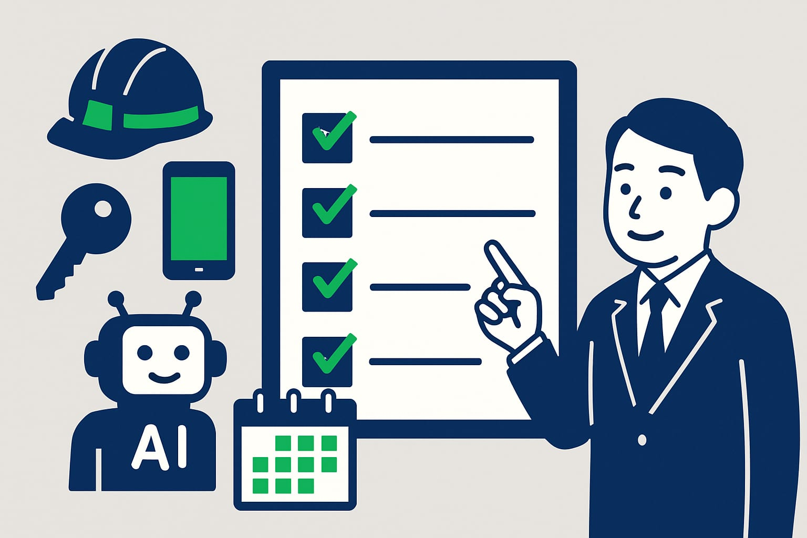
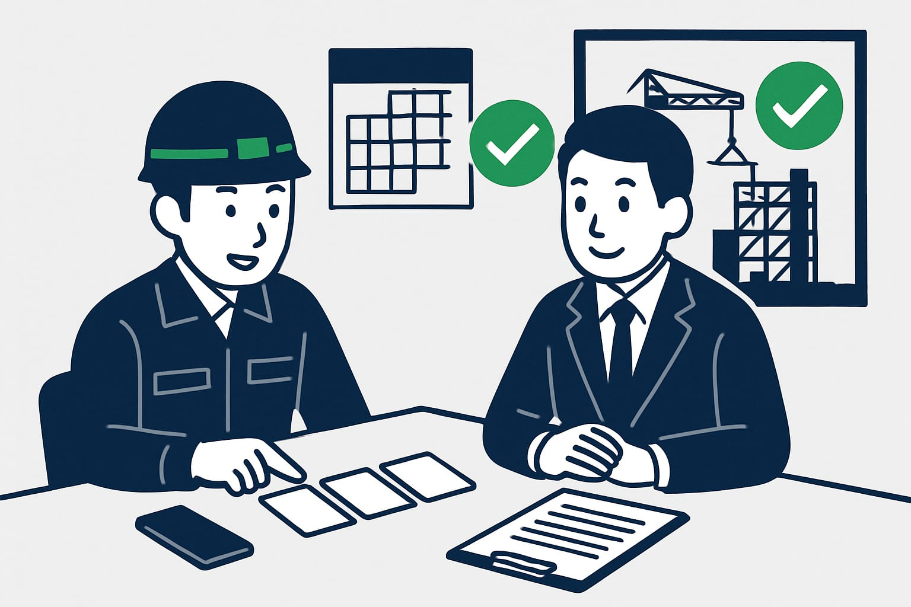

AIシステム助成金の全体像と建設業が確認する制度ポイント
現場写真、日報、見積、物件対応。毎日の書き直しをAIで減らしたいと思っても、制度が多いと迷います。この記事では、建設・不動産の中小企業がAIシステム導入前に見る助成金・補助金の全体像と、LINEで使う場合の確認点を整理します。

この記事の要点
- IT導入補助金だけで判断しない
- 助成金と補助金は入口が違う
- LINEで使うAIも対象確認
- 申請前に費用と時期を整理
- 制度は年度ごとに変わる
AIシステムの助成金は、まず全体像を見ます
AIシステムを入れたいとき、最初に検索されやすいのはIT導入補助金です。もちろん有力な候補です。ただ、建設業や不動産業では、それだけで判断しないほうが安全です。
理由は、使いたいAIの中身が会社ごとに違うからです。見積の下書きを作るのか。現場写真から日報を作るのか。LINEで問い合わせ対応を楽にするのか。目的によって、見る制度が変わる場合があります。
2026年10月20日時点でも、助成金・補助金は年度ごとに内容が変わります。金額、率、締切、対象経費は、最新の公募要領で確認が必要です。この記事では、細かい数字よりも先に見る順番を整理します。
導入費用の考え方を先に見たい方は、AIシステム導入費用の相場と中小建設業の助成金・補助金活用も参考になります。制度を選ぶ前に、何にいくらかかるかを大まかに分けておくと話が早くなります。
助成金と補助金は、見るポイントが少し違います
助成金と補助金は、どちらも返済不要となる場合が多い制度です。ただし、同じものではありません。名前が似ているため、ここで迷う会社が多いです。
補助金は、公募に申請して採択を受ける形が一般的です。採択前に契約や支払いを進めると対象外になる場合があります。助成金は、制度の目的や要件に合うかを確認しながら進めるものが多いです。
| 見る項目 | 補助金 | 助成金 |
|---|---|---|
| 入口 | 公募に申請する | 要件に合うか確認する |
| 代表例 | IT導入補助金、小規模事業者持続化補助金 | 人材開発支援助成金など |
| 注意点 | 採択前の契約に注意 | 開始前の手続きに注意 |
| 共通点 | 後払いになる場合が多い | 後払いになる場合が多い |
大事なのは、先に買ってから探さないことです。AIシステムを契約する前に、使えそうな制度を確認します。制度ごとに要件があるので、ご相談の際に確認します。
建設業のAI導入で候補になる主な制度

建設業でAI導入の補助金を探すと、いくつかの制度が候補になります。どれが正解かは、会社の規模、使うシステム、目的、申請時期で変わります。
| 制度名 | 向いている可能性があるケース | 先に見る点 |
|---|---|---|
| IT導入補助金 | 業務用のITツールとしてAIシステムを入れる | 対象ツールや枠の確認 |
| 人材開発支援助成金 | AI活用と社内の取り組みが制度目的に合う | 制度ごとの要件確認 |
| 小規模事業者持続化補助金 | 小規模事業者が販路開拓や業務効率化を進める | 事業計画とのつながり |
| 自治体の補助制度 | 都道府県や市区町村のDX支援を使う | 地域、募集時期、対象経費 |
たとえば、現場写真から日報を作るAIシステムなら、ITツールとして見られるかを確認します。あわせて、会社の取り組み全体が別の制度に合うかも見ます。
一つの制度だけに絞ると、時期が合わないことがあります。反対に、制度を広げすぎると準備に時間がかかります。まずは候補を二つから三つに絞るのが現実的です。
LINEで使うAIシステムは対象になる可能性があります
DX職人のAIシステムは、いつものLINEのトークから使えます。新しい画面を毎回開く必要はありません。現場でスマホを開き、普段の連絡と同じ感覚で送れます。
たとえば、現場からLINEに次のように送ります。
- 今日の作業内容を短く送る
- 現場写真を添付する
- AIが日報の下書きや報告文を作る
- 事務所で確認して整える
これにより、夜に日報を最初から書く手間を減らせます。見積のたたき台、請求書の文面、物件問い合わせへの返信案などにも使えます。最後は人が確認する前提です。
IT導入補助金での流れを詳しく知りたい方は、IT導入補助金で建設業がLINEのAIシステムを導入する流れで説明しています。ただし、対象になるかはツール、費用、申請時期で変わります。最新の公募要領で確認します。
制度を探す前に決めたい三つのこと

助成金や補助金を探す前に、社内で決めたいことが三つあります。ここを決めずに制度名だけを追うと、あとで対象経費がずれる場合があります。
- 減らしたい作業を一つに絞る 見積の打ち直しなのか、日報作成なのか、写真整理なのかを決めます。最初から全部を変えようとしないほうが進めやすいです。
- 誰がどこで使うかを決める 現場担当がLINEで使うのか、事務所で確認するのかを決めます。使う場所が現場か事務所かで、必要な機能も変わります。
- 契約と支払いの時期を確認する 多くの制度では、申請前の契約や支払いに注意が必要です。人材開発支援助成金などでは、開始前の手続きが関係する場合があります。詳しくは助成金を使うなら、先に確認しておきたい「計画届」のことでも触れています。
先に決めるのは、難しい資料ではありません。現場で何に困っているかです。そこから制度を逆算します。
建設・不動産でAIに任せやすい業務
AIシステムは、会社の判断を丸ごと任せるものではありません。人が確認する前提で、下書きや整理を任せると使いやすくなります。
建設業で使いやすいのは、次のような業務です。
- 現場メモから日報の下書きを作る
- 写真に説明文を付けて整理する
- 見積項目の抜けを確認する
- 請求書に添える文面を作る
- 協力会社への連絡文を整える
不動産業では、物件問い合わせの返信案や、内見後のメモ整理にも使えます。夜に事務所へ戻ってから文章を作る時間を減らせます。
ポイントは、AIに完璧な正解を求めないことです。現場の人が短く送る。AIが整える。事務所が確認する。この流れにすると、小さな会社でも始めやすくなります。
相談時に確認する流れ
AIシステムの導入で助成金や補助金を考えるなら、次の順番で確認します。制度名から入るより、現場の困りごとから入るほうが早いです。
- 今の業務で時間がかかっている作業を聞く
- LINEで使えるAIシステムに置き換えられるかを見る
- 費用を初期費用と月額費用に分ける
- IT導入補助金、人材開発支援助成金、小規模事業者持続化補助金などを候補にする
- 申請時期、契約時期、支払い時期を確認する
- 最新の公募要領や公式情報で確認する
この時点で、必ず採択されるとは言えません。全額が対象になるとも限りません。対象外の費用が出る場合もあります。
DX職人では、建設・不動産の現場で使いやすいLINE型のAIシステムを前提に、どの制度から確認するかを整理します。まずは、見積、日報、写真整理、物件対応のうち、一番減らしたい作業を教えてください。そこから導入の形を一緒に確認します。
よくある質問
AIシステムの導入に助成金は使えますか？
使える場合があります。ただし、制度の目的、対象経費、申請時期によって変わります。AIシステムの内容と会社の取り組みを確認し、候補制度を絞ることが大切です。
建設業がAI導入でまず見る補助金は何ですか？
IT導入補助金が候補になりやすいです。あわせて、小規模事業者持続化補助金や自治体の制度も確認します。年度ごとに内容が変わるため、最新情報で見ます。
IT導入補助金だけ見れば十分ですか？
十分とは限りません。LINEで使うAIシステム、日報作成、見積整理など、目的によって別の助成金や補助金が候補になる場合があります。先に業務内容を整理します。
LINEから使うAIシステムも補助金の対象になりますか？
対象になる可能性はあります。ツール登録の有無、費用の内訳、申請時期などで判断が変わります。契約前に制度の条件を確認することをおすすめします。
助成金や補助金はいつ相談すればよいですか？
契約や支払いの前がおすすめです。先に進めると対象外になる場合があります。まずは、導入したいAIシステムの目的、費用、開始時期を整理して相談するとスムーズです。